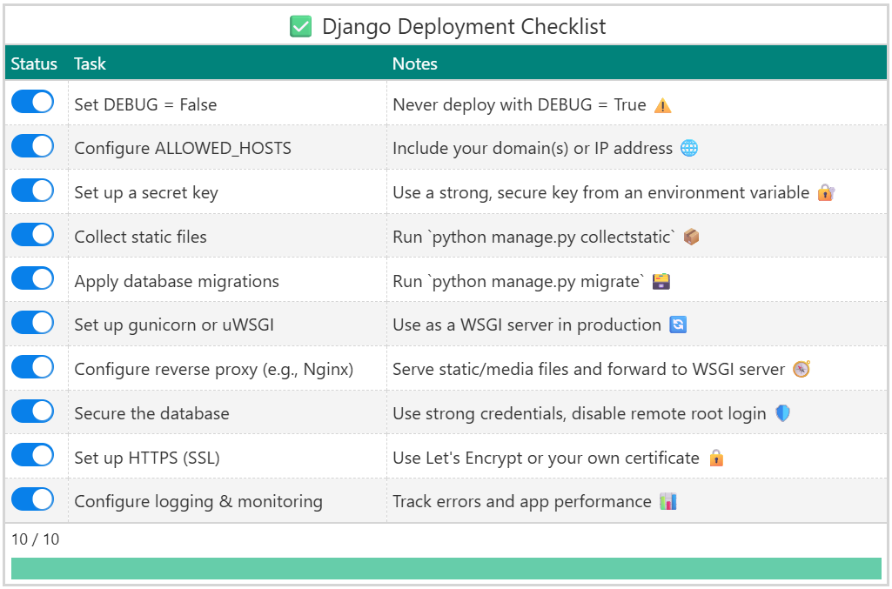

Interactive Django Deployment Checklist with marimo
python
marimo
gt
django
Author
Jerry Wu
Published
June 25, 2025
I love Django—it covers pretty much everything I need in a web environment. However, when it comes time to deploy a project to production, there are always a bunch of pre-deployment checks, and I can never seem to remember them all. I find myself constantly revisiting the official Django deployment checklist page.
Today I realized I don’t need all the detailed information every time—just a simple reminder list is enough. So, I built an interactive Django deployment checklist using Great Tables in marimo and hosted it on marimo.app. Now I can interact with it whenever I need a quick double-check.

marimo
NoteGive It a Sec – WASM Magic Happening
The widgets may take a few moments to load, as they rely on WebAssembly under the hood.
I asked AI to generate a checklist and wrapped it in a Polars DataFrame called df.
I created 10 switch widgets and stacked them into an array widget named status_widgets to represent the status of each checklist item.
I extracted the HTML representation of each widget via its _repr_html_() method and inserted it as a new "Status" column in df, which I then wrapped in a Great Tables GT object.
I added two source notes using GT.tab_source_note()—one to display progress, and another for a visual progress bar.
import marimo as moimport polars as plfrom great_tables import GT, html, md
tasks = ["Set DEBUG = False","Configure ALLOWED_HOSTS","Set up a secret key","Collect static files","Apply database migrations","Set up gunicorn or uWSGI","Configure reverse proxy (e.g., Nginx)","Secure the database","Set up HTTPS (SSL)","Configure logging & monitoring",]notes = ["Never deploy with DEBUG = True ⚠️","Include your domain(s) or IP address 🌐","Use a strong, secure key from an environment variable 🔐","Run `python manage.py collectstatic` 📦","Run `python manage.py migrate` 🗃️","Use as a WSGI server in production 🔄","Serve static/media files and forward to WSGI server 🧭","Use strong credentials, disable remote root login 🛡️","Use Let's Encrypt or your own certificate 🔒","Track errors and app performance 📊",]n_row =len(tasks)status = ["☐"] * n_rowdata = {"Status": status, "Task": tasks, "Notes": notes}df = pl.DataFrame(data)